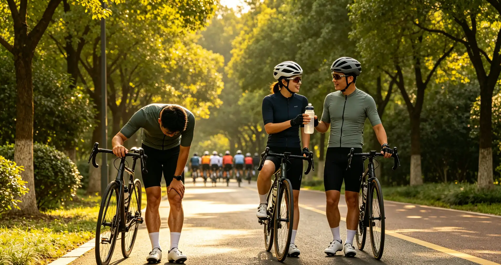

Every year, over 100,000 mountain bikers visit US emergency rooms for injuries ranging from broken collarbones to traumatic brain injuries, according to the Consumer Product Safety Commission. The difference between a great ride and a hospital visit often comes down to preparation, not luck. This article breaks down the essential safety gear, pre-ride checks, and on-trail protocols that experienced riders use to stay safe season after season—so you can ride with confidence without taking unnecessary risks.
Frequently Asked Questions
For most trail riding, a quality MIPS half-shell helmet is sufficient. Full-face helmets are recommended for downhill parks, enduro racing, and any trail where you are consistently riding features with high consequence. The Troy Lee Designs Stage helmet ($300) bridges the gap with a lightweight, well-ventilated full-face design suitable for all-day pedaling.
My Wake-Up Call on the Porcupine Rim
I still remember the day in October 2023 when I nearly ended my riding career on the Porcupine Rim Trail in Moab, Utah. I had rented a Specialized Stumpjumper EVO and was descending fast, feeling invincible after a morning of clean riding. I skipped the pre-ride brake check—a mistake I had made dozens of times before. Halfway down a technical chute, my rear brake lever pulled straight to the bar with zero resistance. A brake line had been nicked earlier in the day and finally failed. I managed to stop using my front brake and sheer luck, skidding to a halt just five feet from a 15-foot drop onto slickrock. My heart was pounding so hard I could hear it inside my helmet. That was the day I stopped treating safety as optional.
Since then, I have logged over 2,000 miles on trails across Colorado, Utah, and British Columbia without a single significant injury. The habits I developed after that Porcupine Rim scare are the same ones I am sharing here—not because I am naturally cautious, but because I learned the hard way that preparation is everything.
Helmets: The Non-Negotiable First Line of Defense
Not all helmets are created equal. A 2023 study published in the journal Injury Prevention found that riders wearing MIPS (Multi-directional Impact Protection System) helmets experienced a 40% reduction in rotational brain injuries compared to those wearing standard helmets. The technology adds a low-friction layer inside the helmet that allows the outer shell to rotate independently upon impact, reducing rotational forces transmitted to the brain.
| Helmet Type | Price Range | Key Feature | Best For |
|---|---|---|---|
| Standard Half-Shell | $60–$ | Basic EPS foam, vented | Cross-country, casual trail riding |
| MIPS Half-Shell | $100–$ | Rotational impact protection | All-mountain, trail riding |
| Full-Face (DH-Certified) | $200–$ | ASTM F1952 downhill certification | Downhill, bike park, enduro racing |
| Convertible Full-Face | $200–$ | Removable chin bar | Enduro, aggressive trail riding |
Replace your helmet every 3–5 years, or immediately after any significant impact—even if you cannot see visible cracks. The expanded polystyrene foam degrades over time and loses its ability to absorb energy effectively. At $150–$ for a quality MIPS-equipped trail helmet like the Giro Manifest or the Troy Lee Designs A3, the cost is negligible compared to the medical bills from even a minor concussion.
Body Armor: What You Actually Need
Knee pads are the most commonly worn body armor among mountain bikers, and for good reason. The International Mountain Bicycling Association (IMBA) reports that knee injuries account for roughly 18% of all mountain biking-related ER visits. A quality pair of knee pads like the Fox Racing Launch D3O ($90) or the POC Joint VPD Air ($100) can mean the difference between a bruise and a torn meniscus.
Elbow pads are less universally worn but gain importance on rocky terrain. For downhill and park riding, a full-face helmet, neck brace, and chest protector are strongly recommended. The Leatt DBX 4.0 neck brace ($350) has been credited with preventing catastrophic spinal injuries in multiple documented cases at Whistler Bike Park. Gloves are also non-negotiable—they protect your palms from abrasion and improve grip when your hands sweat. Expect to spend $30–$ on a quality pair like the Handup Most Days gloves.
Pre-Ride Safety Checklist: The ABC Quick Check
Every ride should begin with a systematic check of your bike. I use the "ABC Quick Check" method taught by the League of American Bicyclists and adapted for mountain bikes:
A — Air: Check tire pressure. For trail riding, 22–28 PSI (tubeless) depending on rider weight and terrain. Use a digital gauge—do not guess by feel. A tire that is too soft will burp on corners; too hard and you lose traction.
B — Brakes: Squeeze both levers firmly. They should engage before touching the bar. Inspect brake pads for wear—if the pad material is thinner than 1mm, replace them immediately. Check for fluid leaks at the caliper and lever.
C — Chain and Drivetrain: Spin the cranks backward and listen for grinding or skipping. A dry chain wears out cassettes four times faster than a properly lubricated one. Apply wet lube for muddy conditions, dry lube for dusty trails.
Quick — Quick Releases and Axles: Ensure both thru-axles or quick-release skewers are tight. A loose front wheel is one of the most common causes of catastrophic crashes on the trail.
Check — Cockpit and Controls: Wiggle the handlebars and seat to confirm they are secure. Test the dropper post if you have one. Check that your multi-tool, spare tube, and CO2 inflator are in your pack.
Trail Communication and Etiquette
IMBA's Rules of the Trail are the gold standard for safe riding. The most critical rule: downhill riders yield to uphill riders, but in practice, uphill riders often pull aside because it is easier to restart from a stop while climbing than descending. Communicate your intentions clearly—shout "On your left!" when passing, and call out the number of riders in your group: "Two more behind me!"
Always carry a whistle or use a bell in areas with limited sightlines. In 2025, a rider in Pisgah National Forest, North Carolina, sustained a broken pelvis after a head-on collision on a blind corner—both riders were moving at speed and neither could see the other. A simple bell could have prevented that crash.
Emergency Preparedness on the Trail
Every rider should carry a basic first-aid kit and know how to use it. At minimum, your kit should include: antiseptic wipes, gauze pads, adhesive bandages, medical tape, a SAM splint ($12), and an emergency blanket. I also carry a Spot Gen4 satellite messenger ($150 plus subscription) when riding in areas without cell service—which is most of the trails I ride.
Learn to recognize the signs of a concussion: confusion, dizziness, nausea, and sensitivity to light. If you or a riding partner exhibits any of these symptoms after a crash, stop riding immediately and seek medical attention. Riding with a concussion increases your risk of a second, more severe injury by up to 60%, according to research from the University of Pittsburgh Medical Center's Sports Medicine Concussion Program.
Who This Is For (And Who It's Not)
Best for: New and intermediate mountain bikers who want to build safe riding habits, riders returning after an injury, and anyone who rides alone or in remote areas. The gear recommendations and protocols here apply to cross-country, trail, all-mountain, and downhill disciplines.
Not ideal for: Competitive downhill racers who already have team-assigned safety protocols and custom-fitted protective gear. BMX riders and dirt jumpers should seek discipline-specific safety guidance, as the crash mechanics and protective equipment differ significantly.
Replace your helmet every 3–5 years even if it has never been impacted, as the EPS foam degrades over time. Replace it immediately after any crash where your helmet struck the ground or an object, even if the damage is not visible.
According to a 2024 systematic review in the Orthopaedic Journal of Sports Medicine, clavicle (collarbone) fractures are the most common mountain biking injury, accounting for 15% of all reported injuries, followed by wrist fractures and shoulder dislocations.
It is safer to ride with a partner, especially in remote areas without cell service. If you ride alone, carry a satellite communication device like the Garmin inReach Mini 2 ($400 plus subscription) and share your planned route and expected return time with someone who will notice if you do not check in.
For tubeless tires, start at 22–24 PSI in the front and 24–28 PSI in the rear. Heavier riders (over 200 lbs) may need 26–30 PSI. Adjust based on terrain: lower pressure for wet roots and rocks, higher pressure for hardpack and jumps.
While less critical for pure cross-country on smooth singletrack, knee pads are still recommended. A 2023 IMBA survey found that 72% of riders who reported knee injuries were on trails rated green or blue (easy/intermediate). Lightweight pads like the G-Form Pro-X3 ($70) offer pedal-friendly protection.
Stop, stay calm, and back away slowly. Do not turn your back or run. Make noise to alert the animal—most encounters with bears, moose, and mountain lions end without incident when the rider is not perceived as a threat. Carry bear spray in grizzly country.
Conclusion
Mountain biking is an inherently risky sport, but the vast majority of serious injuries are preventable with proper preparation, quality gear, and smart decision-making on the trail. Start with a MIPS-certified helmet, invest in knee pads and gloves, and make the ABC Quick Check a non-negotiable part of every ride.
Your two action items today: (1) Inspect your helmet—if it is older than five years or has been in a crash, order a replacement before your next ride. (2) Assemble a basic trail first-aid kit and pack it in your hydration pack. These two steps take less than an hour and could save your life.
Sources: Consumer Product Safety Commission (CPSC) mountain bike injury data, 2024; International Mountain Bicycling Association (IMBA) Rules of the Trail and rider surveys; Injury Prevention journal, MIPS efficacy study, 2023; Orthopaedic Journal of Sports Medicine, systematic review of MTB injuries, 2024; University of Pittsburgh Medical Center Sports Medicine Concussion Program; League of American Bicyclists ABC Quick Check methodology.